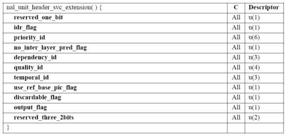

H.264 SVC
视频厂商POLYCOM,VIDYO和RADVISION等都推出H.264 SVC技术。针对H.264 SVC技术做个介绍。
CISCO和POLYCOM都提供了免版税的H.264 SVC的版本。 其中open264现在最亮眼。
1. H.264 SVC是什么？
H.264SVC (Scalable Video Coding)是以H.264为基础，在语法和工具集上进行了扩展，支持具有分级特性的码流，H.264SVC是H.264标准的附录G，同时作为H.264新的profile。H.264SVC在2007年10月成为正式标准。
2. SVC分级编码的概念
编码器产生的码流包含一个或多个可以单独解码的子码流，子码流可以具有不同的码率，帧率和空间分辨率。
分级的类型：
时域可分级（Temporal scalability）：可以从码流中提出具有不同帧频的码流。
空间可分级（Spatial scalability）：可以从码流中提出具有不同图像尺寸的码流。
质量可分级（Quality scalability）：可以从码流中提出具有不同图像质量的码流。
图 1 分级类型示意图
3. SVC分级编码的应用
1. 监控领域：监控视频流一般产生2路，1路质量好的用于存储，1路用于预览。用SVC编码器可以产生2层的分级码流，1个基本层用于预览，1个增强层保证存储的图像质量是较高的。使用手机远程监控预览的情况下，可以产生一个低码率的基本层。
2. 视频会议领域：视频会议终端利用SVC编出多分辨率，分层质量，会议的中心点替代传统MCU二次编解码方法改为视频路由分解转发。也可在网络丢包环境下利用时域可分级，抛弃部分时域级实现网络适应性。在云视讯领域SVC也有想像空间。
3. 流媒体IPTV应用：服务器可以根据不同的网络情况丢弃质量层，保证视频的流畅。
4. 兼容不同网络环境和终端的应用。
图 2 针对不同网络和终端的应用
4. SVC分级编码优点缺点
优点：分级码流优点是应用非常灵活，可以根据需要产生不同的码流或者提取出不同的码流。使用SVC实现一次分层编码比用AVC编多次更高效。分层编码有技术优势，新的编码器H.265也使用了分层思想，可以实现灵活的应用，也可提高网络适应性。
缺点：分级码流的解码复杂度增加。基本层是AVC兼容码流，编码效率没有影响。在同样的条件下，分级码流比单层码流的压缩效率要低10%左右，分级层数越多，效率下降越多，现在的JSVM编码器最多支持3个空域分级层。在同样的条件下，分级码流比单层码流的解码计算复杂度高。SVC是2007年10月才做为正式标准，兼容性和对通性远没有AVC好，所以SVC实际应用不是广泛。
图 3 分级编码和单层编码效率对比
注：该图引用自德国HHI网站。
（1）对于时域分级，AVC已经实现，时域分级对编码效率没有影响。
（2）质量分级如图 3（a）所示，质量可分级码流对编码效率影响大约在10%。
（3）空域分级如图 3（b）所示，SVC空域分级编码，不只是影响整体编码效率，对于基本层（AVC层）的编码效率也有10%的降低，基本层编码效率降低的原因是基本层帧内预测受限。
5. SVC对h264的技术扩展，语法扩展
语法扩展：
（1） 对NAL（Network Adaptive Layer）头进行了扩展，用于描述码流的分级信息。为了便于描述AVC兼容码流的分级特性，定一个NAL类型为14的前缀NAL，该类型的NAL出现在AVC兼容码流的NAL前面，用于描述AVC基本层码流的分级信息。见图 4、 图 5。
（2） 使用保留的NAL类型14、20编码增强层码流。
图 4 NAL头扩展

图 5 扩展NAL头内容
技术扩展，分层编码为了提高编码效率，就需要最大程度的利用层间相关性。SVC增加了层间预测的工具集，主要如下：
1. 层间帧内预测（Inter-layer intra prediction）。
2. 层间宏块模式和运动参数预测（Inter-layer macroblock mode and motion prediction）。
3. 层间残差预测（Inter-layer residual prediction）
下面会通过图介绍新增加的层间预测技术。
6. SVC的技术
6.1 时域分级技术
图 6 时域分级示意图
注：可以通过依次丢弃棕色、绿色、蓝色得到不同帧频的码流。
6.2 空域分级技术
图 7 空域分级示意图
6.3 层间预测技术
图 8 层间预测技术示意图（左）层间帧内预测（中）层间类型预测（右） 层间残差预测
层间帧内预测（Inter-layer intra prediction）：图像纹理复杂并且帧间搜索匹配不好的宏块，如果基本层采用的是帧内预测，增强层可以采用层间帧内预测模式提高编码效率。具体做法是把基本层的I块重建上采样得到增强层的预测，增强层只需要传原始图像和层间帧内预测的残差。
层间宏块模式和运动参数预测（Inter-layer macroblock mode and motion prediction）：如图 7所示，增强层的宏块类型可以通过基本层预测获取。增强层的运动参数也可以通过基本层运动参数上采样获取。这一点是h.264SVC和其他分级编码技术的区别之一。其它分级编码技术一般通过像素域的上采样进行预测，而对于h.264SVC，认为时域相关性大的区域，利用层间的运动参数预测，在增强层做运动补偿效率更高。对于层间运动参数的预测，语法支持的颗粒大小可以是一个宏块，最小是一个8x8块。
层间残差预测（Inter-layer residual prediction）：如图 7所示，对于帧间编码的宏块，增强层的图像残差和基本层的图像残差具有相关性，可以利用基本层的残差进行上采样减少增强层编码的图像残差。对于空间分辨率发生变化的层间残差预测，发生在残差像素域，计算量较大；对于空间分辨率不发生变化的层间残差预测（质量分级），发生在变换系数或变换电平域，计算量较小。
6.4 多层码流，只进行一次运动补偿
通过技术上来保证只需要一次运动补偿。因为层间预测没有利用帧间块的重建，所以参考层（或者称为基本层）不需要解码重建，层间预测使用的是运动矢量预测，对于解码重建只需要最后做一次运动补偿即可。
这样做的好处：（1）节省计算量，降低解码复杂度；（2）减少对解码器对内存的需求。
6.5 分级表述的语法元素描述
Dependency_id：D层标记，也是我们常说的空域分级层标记，从0到7，最多有8个D层。基本层的值为0。CGS质量分级是特殊的空域分级。
Quality_id：MGS质量分级层标记。从0到15。
Temporal_id：时域分级标记，从0到7，最多有8个时域分级。
use_ref_base_pic_flag：MGS使用的语法。通常，都是使用当前层的重建图像作为参考图像，对于关键帧，则使用参考层的重建图像作为参考图像。注意区别，不是使用当前图像的参考层重建作为参考。
discardable_flag：当前图像没有被作为层间参考层，则该标记置1。在码流提取的时候，如果该层不是目标层，则会被丢弃。
6.6 使用层间预测的语法元素描述
NAL头：no_inter_layer_pred_flag；整个slice是否启用层间预测的开关
Sliceheader：每个宏块自适应层间预测模式还是使用默认层间预测模式
adaptive_base_mode_flag
default_base_mode_flag
adaptive_motion_prediction_flag
default_motion_prediction_flag
adaptive_residual_prediction_flag
default_residual_prediction_flag
宏块的层间预测模式标记：
base_mode_flag ：宏块是否使用层间类型和运动参数预测，直接使用层间预测的运动参数，码流中不再传。
motion_prediction_flag_l0[mb_partSize]：宏块分割是否启用运动矢量层间预测，这种模式还会传层间预测运动矢量和实际运动矢量的残差。
residual_prediction_flag：宏块是否启用残差预测。
6.7 层间类型预测计算
如果base_mode_flag == 1，就需要进行层间类型预测。如果16个块对应的参考层块都是I块，则当前宏块类型是IBL；否则就是INTER_BL，运动矢量和参考索引都是从参考层预测得到，宏块类型我们现在默认是标记为P8x8，子块分割类型可以根据6.9节的计算得到。
6.8 层间运动矢量预测计算
对于base_mode_flag等于1的宏块或者运动矢量使用层间预测的宏块，在层间分辨率发生变换的情况下，存在运动矢量上采样。下面按计算过程的步骤说明原理。
第一步：计算当前层的每个4x4块在参考层对应位置，如果在参考层的对应位置是I块（包含IBL），则返回-1，否则返回参考层对应4x4块的坐标。
第二步：如果当前层宏块的16个4x4块在参考层对应位置都是I块，则当前宏块是IBL类型，不进行后续计算，否则，针对4x4块和8x8块出现参考是I块的情况，用邻近4x4块的参考层对应块取代，这样就可以防止计算参考索引上采样出现-1的情况。
第三步：按照当前层8x8块为最小处理单元获取运动矢量上采样。获取每个4x4块的运动矢量和参考索引之后，从4个参考索引中取最小非负数为该8x8块的参考索引。同时根据4个运动矢量的相近情况，对4个运动矢量进行后处理。
（1） 如果4个运动矢量的差的绝对值小于等于1，则对4个运动矢量取均值，得到最终的运动矢量。
（2） 如果在4x4块排列的水平方向上，两组2个4x4块的运动矢量差的绝对值小于等于1，则分别对2个4x4块的运动矢量取均值，8x8块的分割模式为8x4。
（3） 如果在4x4块排列的垂直方向，两组2个4x4块的运动矢量差的绝对值小于等于1，则分别对2个4x4块的运动矢量取均值，8x8块的分割模式为4x8。
注意：如图 4所示，在空间分辨率变化为1：2的情况下，参考层的1个4x4块对应当前层的一个8x8块，因此运动矢量的后处理不存在。只有在限制空间分辨率为0的情况下（比如空间分辨率为1：1.5），当前层的每个8x8块覆盖参考层的多个4x4块，才存在运动矢量后处理。
图 9 运动信息层间预测示意图
6.9 层间残差预测计算
在层间分辨率发生变化的情况下，同时当前块类型是帧间块，并且residual_prediction_flag==1。这些情况都满足的情况下存在残差预测。
图 10 层间残差预测计算原理
（1）当前层的像素位置假设为（x，y），根据6.5节像素层间映射计算公式，得到参考层对应的像素位置（xRef，yRef）。
（2）如果（xRef，yRef）点和（xRef+1，yRef）点属于同一个变换块，根据双线性得到一个中间结果，如上图中黑点。同理，（xRef，yRef+1）和（xRef+1，yRef+1）点也计算得到一个中间结果。
（3）如果点（xRef，yRef）和点（xRef，yRef+1）属于同一个变换块，则对中间结果采取双线性计算得到层间像素预测的最终结果，否则，y相位判断取哪一个中间结果作为最终值。
6.10 层间像素预测计算
使用条件：当前层宏块类型为IBL类型，即当前层宏块的16个4x4块在参考层中对应位置都是I块，并且当前宏base_mode_flag==1。
图 11 像素上采样示意图（亮度）
（1）首先对参考层中的I宏块和IBL宏块重建，在周围P块中做8像素扩展。
（2）计算当前宏块（0，0）位置的点在参考层中像素对应位置，如图中红色点（xRef，yRef）。
（3）首先计算一组垂直4抽头滤波的中间点。计算公式如下。
（4）在步骤（3）的基础上，进行水平4抽头滤波，获得最终的上采样结果，计算公式如下。
注：计算过程注意优化，同时要注意代码的稳定性及字长。
6.11 空间分级编码原理
举例说明，两层编码，基本层为AVC编码，增强层采用层间预测自适应编码。
（1） 基本层采用AVC的编码方式，限制条件就是帧内块预测受限。
（2） 增强层的编码可以利用基本层的运动矢量上采样预测，残差上采样预测，I块的像素上采样预测，宏块类型预测。同时增强层的宏块也可以不采用层间预测，编码方式类似AVC。
6.12 质量分级编码原理
以2层的CGS（coarse-grain scalability）为例说明质量分级编码的原理，不启用SVC-->AVC重现选项。基本层采用AVC的编码方式，限制条件就是帧内块预测受限。因为分辨率不变，可以更好的利用层间预测信息。IBL类型宏块：层间I块，利用基本层的I块重建作为预测，对原始图像减去层间预测的残差进行编码。利用运动矢量预测的P块：即可以直接利用基本层的运动矢量作为当前层的运动矢量，也可以利用基本层的运动矢量作为预测运动矢量，在码流中传运动矢量的偏移。利用变换系数域预测的P块：增强层的残差进行变换之后得到变换系数，减去基本层的变换系数反量化之后的值，对得到的变化系数残差进行量化，然后进行熵编码传输。
6.13 SVC------>AVC重写工具的原理
使用提案“V-035”中的PPT中的图说明原理。
6.14 时间分级实现方法
时域分级通过层次B帧或者层次P帧来实现，实际中一般使用层次B帧。通过语法元素中的Temporal_id标记不同的时域层，可以很方便的提取。
.
7. 参考：
1. https://en.wikipedia.org/wiki/Scalable_Video_Coding
2. http://ip.hhi.de/imagecom_G1/assets/pdfs/Overview_SVC_IEEE07.pdf
3. JVT提案“V-035” http://wftp3.itu.int/av-arch/jvt-site/2007_01_Marrakech/JVT-V035
4. http://www.polycom.com/company/news/press-releases/2012/20121004.html

【活动】阿里云双11活动开始预热 云服务器限时2折起
【调查】有奖调研即刻参与，你竟然是酱紫程序猿！
【推荐】Vue.js 2.x 快速入门，大量高效实战示例
· 对话罗永浩：锤子起死回生，我买了人生第一套房
· Twitter结束测试 将推文字符长度拓展到280个字符
· 从下周回国到暂不回国 贾跃亭：套现资金用于造车了
· 《周鸿祎自传》书摘：和计算机世界一见钟情
· 免费下载：Windows 10 RS4首个ISO镜像17025发布
» 更多新闻...
· 改善程序员生活质量的 3+10 习惯
· NASA的10条代码编写原则
· 为什么你参加了那么多培训，却依然表现平平？
· 写给初学前端工程师的一封信